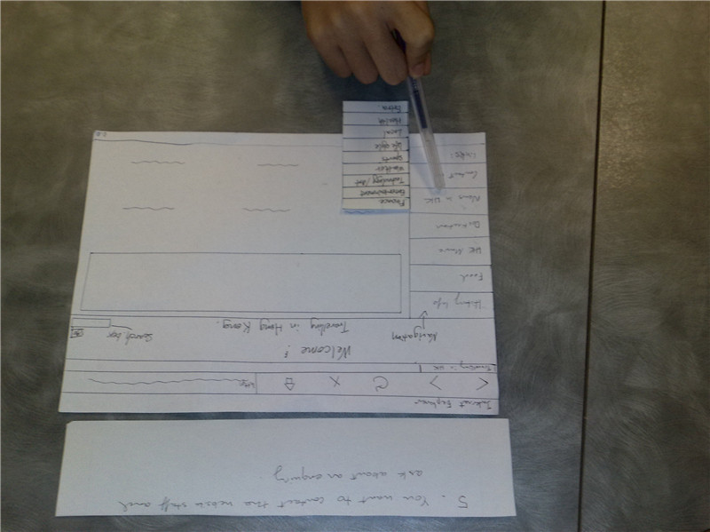
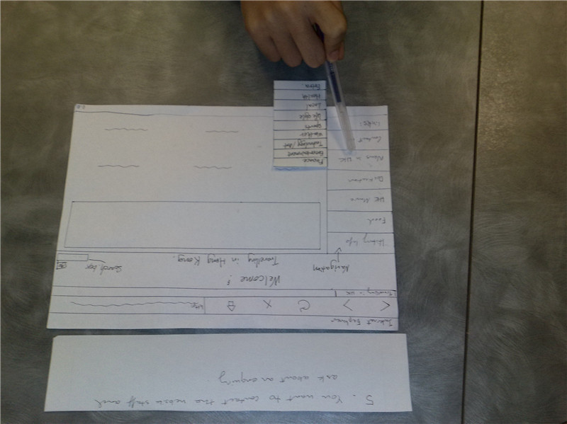
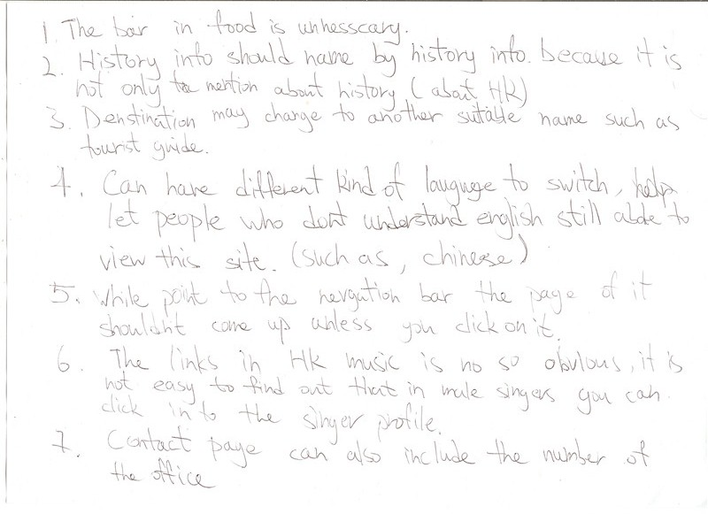
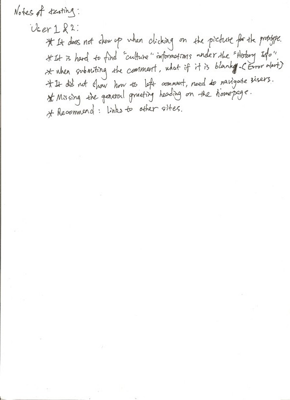
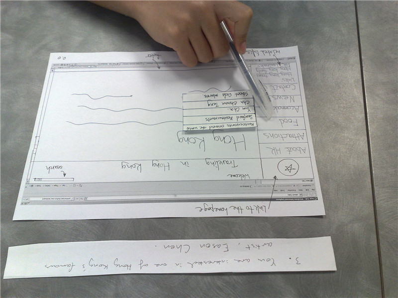
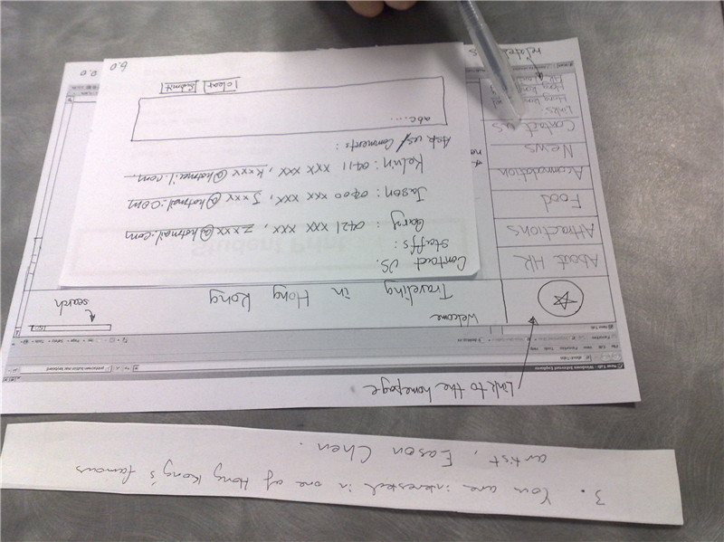
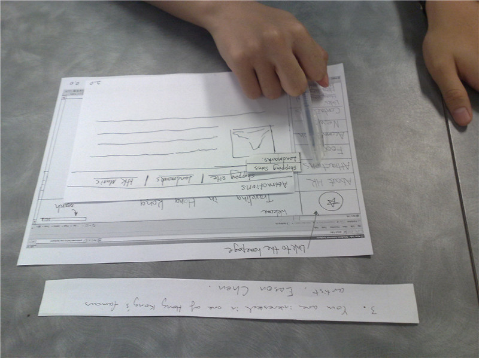

After producing our initial paper prototypes, we evaluated the design by testing them on six users which were ran through the five scenarios we developed. First of all, notations were made on the paper prototypes in order to help users to operate it fluently and easily. Moreover, the users took control of the website. While they decided how to access each scenario, our group members were playing a role as a facilitator to help these users. Problems during the test were recorded and taken down in notes.
Evaluaton of Initial Design:
 

{kind=link}
From this process (shown above), we spotted several errors and then the missing functionalities, some were obvious and some were major failures. As well as that we received recommendations of these design issues. For example:
- Some categories were named as an impropriate definition, e.g. the information of ¡°Culture¡± and ¡°Education¡± were not easy to be discovered under the ¡°History Info¡±, which did not mention the aspects of culture and education, thus name as ¡°About Hong Kong¡± is recommended.
- The category of ¡°HK Music¡± might be part of the attractions of Hong Kong combining with ¡°Destinations¡±. The aspect of accommodation can be added to the category.
- The sub-level pages of ¡°News in HK¡± category were redundant information that they could be resorted and presented in one page.
- Recommended family websites might be set under the navigation bar.
- A missing logo for the homepage would be useful.
- Buttons were missing in the prototypes for the search input box.
- What happen if users click on the pictures during visiting the website?
Video of Evluation process(A consent form had been filled under the images file):
Note taken:
{kind=link}
 
{kind=link}
As a result of our design evaluation, a final prototype in paper form was produced, based on the problems and recommendations from the users, we improved our design by modifying the whole design process from content inventory, sitemap and the paper prototypes, furthermore we repeated the valuation process as above steps to test the modifications.
Evaluation of Final Design
{kind=link}
  
{kind=link}
{kind=link}